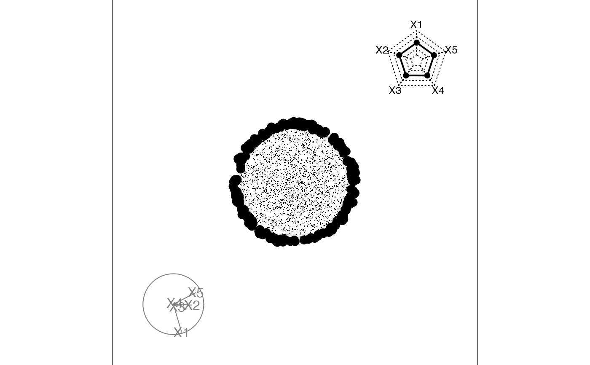

The manual slice tour takes the current projection, with display_slice, and changes the slice center.
Usage
manual_slice(
data,
proj,
var = 1,
nsteps = 20,
v_rel = 0.01,
rescale = FALSE,
sphere = FALSE,
col = "black",
half_range = NULL,
anchor_nav = "topright",
palette = "Zissou 1",
...
)Arguments
- data
numeric matrix, with n rows and p columns
- proj
projection from which slices are constructed
- var
variable axis to run the center along: 1, ..., p
- nsteps
number of changes in center to make
- v_rel
relative volume of the slice. If not set, suggested value is calculated and printed to the screen.
- rescale
Default FALSE. If TRUE, rescale all variables to range [0,1]?
- sphere
if true, sphere all variables
- col
color to use for points, can be a vector or hexcolors or a factor. Defaults to "black".
- half_range
half range to use when calculating limits of projected. If not set, defaults to maximum distance from origin to each row of data.
position of the anchor: center, topright or off
- palette
name of color palette for point colour, used by
hcl.colors, default "Zissou 1"- ...
other options passed to output device
Examples
# Note that you might need to use the quartz()
# on OSX to see the animation
sphere5 <- data.frame(geozoo::sphere.hollow(5)$points)
proj <- basis_random(5, 2)
manual_slice(sphere5, proj, var=3, nsteps=10, rescale=TRUE, half_range=1.5)
#> Converting input data to the required matrix format.
#> Using v_rel=0.01, corresponding to a cutoff h=0.22
